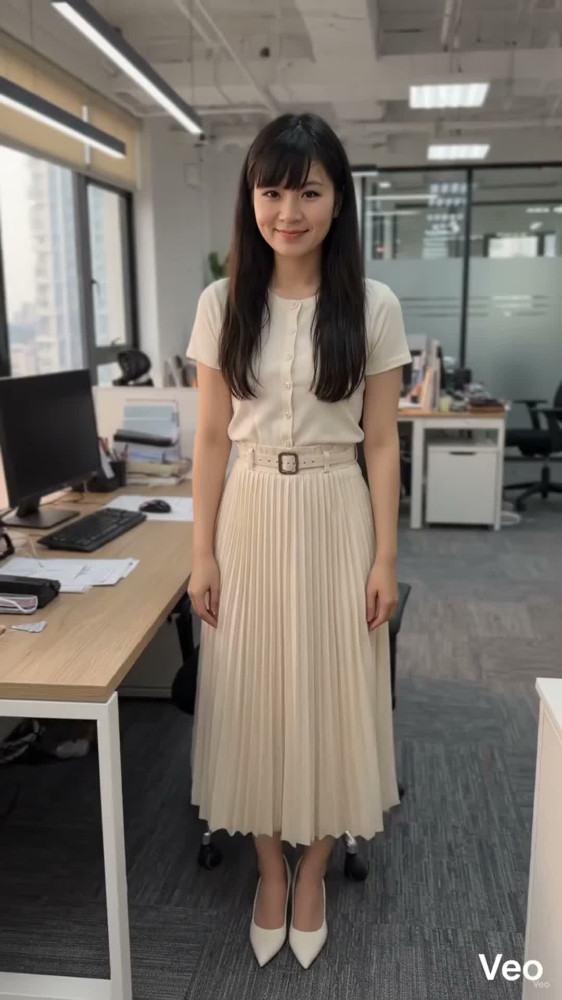

Chân váy kaki kem dáng dài đi làm: 1m50 mặc vào nhìn như 1m60

Sáng nay đi làm, Lisa chọn chân váy kaki kem dáng dài này: áo kem ôm ngắn tay cài nút sơ vin + chân váy kaki kem dài 86cm form chữ A + đai mỏng kèm theo + giày cao gót trắng + túi quilted be nhỏ. Chân váy cạp cao, áo sơ vin gọn — 1m50 mặc vào nhìn như 1m60, đúng kiểu "dáng nhỏ hack" đang được nhiều bạn quan tâm.
Đọc trước khi mua: bài viết này là gợi ý phối đồ lấy cảm hứng từ mẫu chân váy kaki dáng dài đang bán chạy trên Shopee. Lisa là nhân vật AI, nên bài viết không phải bài đánh giá sản phẩm Lisa đã mặc thật hay đã dùng thử. Giá, chất liệu và size cần kiểm tra lại trên trang bán trước khi mua. Link mua hàng (affiliate — mua qua link, Lisa Style có thể nhận một khoản hoa hồng nhỏ mà giá bạn trả không đổi): Chân váy dáng dài công sở kaki Nhật Innovation TA-286 — dài 86cm, form chữ A, tặng kèm đai; giá 135.149đ sau voucher, đã bán 80k+, 4,9 sao.
Cùng một set kem, nhìn lúc đi bộ trên vỉa hè, lúc ngồi bàn làm việc và lúc cười duyên sẽ khác nhau — xem đủ 3 góc rồi hãy quyết có hợp với bạn không:
Đi bộ vỉa hè — váy xếp ly dài thướt tha, túi be xách tayNgồi bàn làm việc — cạp cao + sơ vin gọn, eo nhìn nhỏ hẳnCười duyên — kem nhẹ nhàng, sáng mặt đi làm
Vì sao chân váy kaki kem hợp đi làm?
Cạp cao + sơ vin, hack dáng: chân váy cạp cao ôm eo, áo sơ vin gọn — đường eo đẩy cao lên, chân nhìn dài ra hẳn; 1m50 mặc vào nhìn như 1m60, đi làm cả ngày vẫn gọn dáng.
Kaki Nhật, ít nhăn: chất kaki Nhật đứng form, xếp ly bản to giữ nếp cả ngày; ngồi làm việc lâu vẫn gọn, không nhăn nhúm như kaki thường.
Dài 86cm, form chữ A: dài qua gối, che bắp chân; form A xòe nhẹ, đi lại thoải mái mà vẫn thanh lịch, hợp môi trường công sở.
Màu kem dễ phối: kem nhạt hợp mọi màu áo (trắng, be, pastel); đi giày trắng hoặc nude đều hợp, túi be nhỏ là đủ điểm nhấn.
Cách chọn chân váy dài cho vừa người
Dáng nhỏ thì chọn cạp cao: cạp cao là điểm mấu chốt — cạp thấp sẽ nuốt dáng; chọn cạp cao ôm vừa eo, không siết quá, áo sơ vin hết vào váy.
Dài 86cm, đi giày cao gót trắng: váy dài 86cm chạm gần mắt cá; đi cao gót trắng mũi nhọn sẽ kéo chân dài thêm, đừng đi giày bệt với váy dài này sẽ làm chân trông ngắn lại.
Sơ vin gọn, thắt đai mỏng: áo sơ vin hết vào váy, thắt đai mỏng kèm theo để chia rõ eo — chân; đai to bản sẽ nặng dáng, không hợp váy xếp ly nhẹ.
Kem hợp da sáng và da ấm: kem nhạt hợp da sáng; da ấm hơn thì chọn kem đậm hoặc be đậm — cùng mẫu này còn có màu đen, kem và be đậm.
Mẹo phối nhanh trong 3 phút
Buổi sáng vội: mặc sẵn áo kem + chân váy kem, thêm giày trắng và túi be là xong; tông kem — trắng đã hợp nhau sẵn, không cần nghĩ phối màu.
Muốn trẻ hơn: xõa tóc dài thẳng, đeo khuyên tai nhỏ màu bạc; tránh vòng cổ to sẽ làm cổ áo cài nút trông nặng nề.
Muốn sang hơn cho buổi họp: đổi túi be thành túi xách tay nhỏ màu nâu, thêm đồng hồ dây da trắng; set kem vẫn giữ vẻ nhẹ nhàng mà sang hẳn lên.